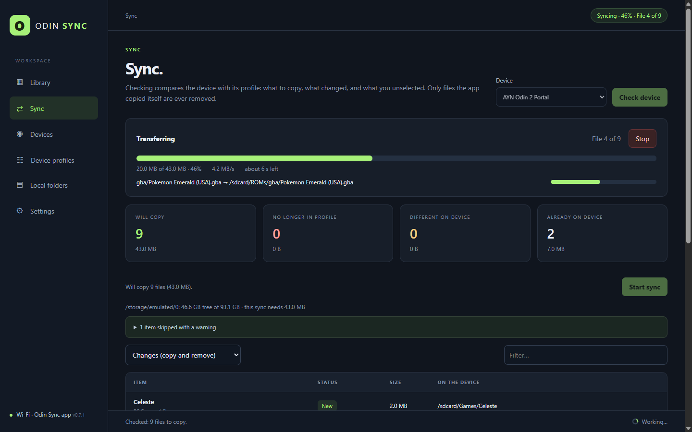
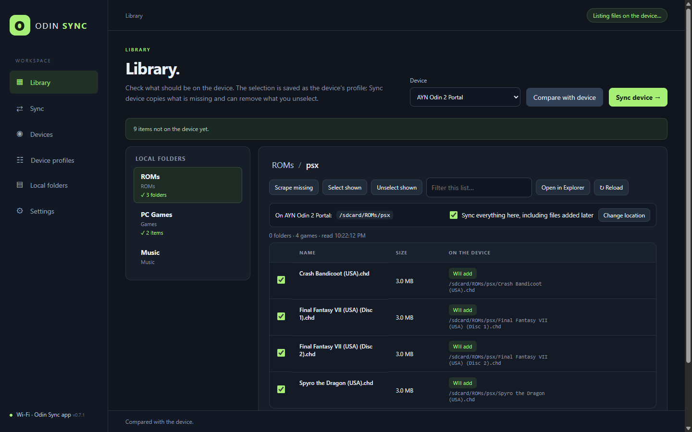
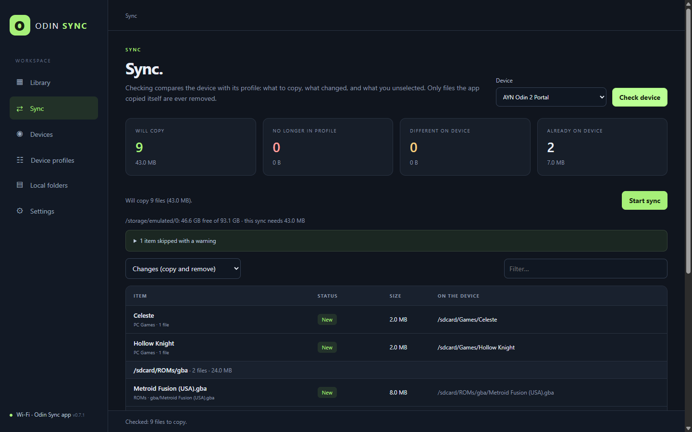
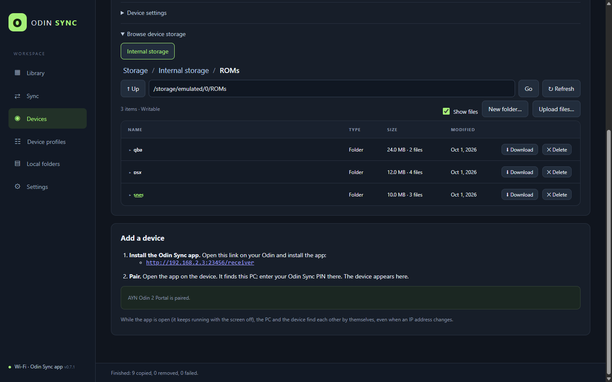

Your library, per device
- A profile for every handheld: where each folder goes, and what belongs on it.
- Check a whole system and new games come along by themselves.
- Compare with device shows what was deleted there and what isn't synced yet.
Pick your ROMs, PC games, music and videos on the PC. Hit Sync. Odin Sync puts exactly what belongs on each Android handheld, in the right folders, over Wi-Fi, and checks every byte.
Free for Windows, Linux and macOS. The Android app installs from the PC app.

No developer options, no cables, nothing to configure on the handheld beyond one permission.
Built by someone who got tired of copying ROMs by hand.



Covers, screenshots and details from libretro, ScreenScraper and Steam, straight into ES-DE.
The best community config for each PC game on your GPU, ready to import.
Open Odin Sync on the handheld and its browser lands in your Library, signed in.
Low impact transfers cap the speed, so you can keep playing while it syncs.
Multi-disc sets travel together, PC games sync whole, and frontend clutter stays home.
The handheld app offers new versions from your PC and installs them in one tap.
Free. The Android app comes with the PC app; you install it on the handheld from a link.
The builds aren't code-signed yet: on Windows choose More info → Run anyway; on macOS right-click the app and choose Open the first time. Android 11 or later on the handheld.